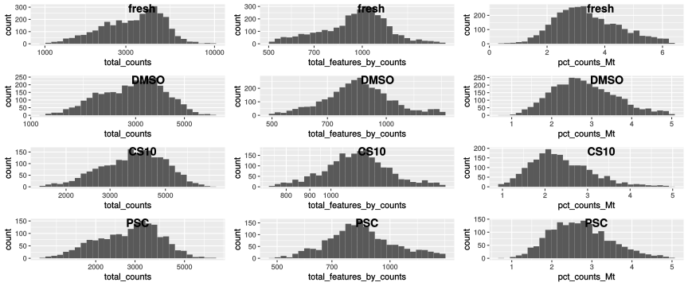

pbmc_roche
Almut Lütge
24 Februar 2020
Pbmc dataset Roche
This datset has been prepared by Roche. It contains pbmc from 4 different sample. Sample are derived from the same patient, have been processed in the same way and have been sequenced together. Experimental differnces are due to different storage conditions. One sample was sequenced from fresh cells, the other ones have been ored in different media and frozen for a week.
suppressPackageStartupMessages({
library(plotly)
library(readr)
library(stringr)
library(edgeR)
library(pheatmap)
library(purrr)
library(scater)
library(dplyr)
library(reshape2)
library(ggplot2)
library(cowplot)
library(Matrix)
library(scran)
library(Seurat)
library(sctransform)
library(readxl)
library(DropletUtils)
library(LSD)
library(CellMixS)
library(tibble)
library(here)
library(scDblFinder)
})
seed <- 1000data
Load data Raw reads were mappe dwith Cellranger v2 against ensembl hg38
out_path <- here::here("out")
data_path <- "/home/Shared_taupo/data/seq/calini_scrnaseq/PBMC_technical_effects/"
fastqdirs <- c("CR038", "CR039", "CR040", "CR041")
sce <- DropletUtils::read10xCounts(samples=paste0(data_path, "PBMC_data/", fastqdirs))
# Add metadata
meta <- read_excel(paste0(data_path, "EXP_CR005 Samples ID.xlsx"))
sce$batch <- gsub(".*data/","", sce$Sample)
sce$mean_reads_per_cell_cr <- meta$`Mean reads/cell`[match(sce$Sample, meta$`Sample ID`)]
sce$info <- meta$`Characteristics`[match(sce$Sample, meta$`Sample ID`)]
colnames(sce) <- paste0(sce$batch, ".", sce$Barcode)
rownames(sce) <- paste0(rowData(sce)$ID, ".", rowData(sce)$Symbol)
sce$batch <- factor(sce$batch)
table(sce$batch)##
## CR038 CR039 CR040 CR041
## 3696 3612 2347 1994dim(sce)## [1] 19883 11649dim(colData(sce))## [1] 11649 5dim(rowData(sce))## [1] 19883 2Calculate QC
#remove genes without any counts
keep_features <- rowSums(counts(sce) > 0) > 0
sce <- sce[keep_features, ]
dim(sce)## [1] 15269 11649# # Mitochondrial genes
is.mito <- grepl("MT-", rownames(sce))
summary(is.mito)## Mode FALSE TRUE
## logical 15256 13mito <- rownames(sce)[is.mito]
sce <- calculateQCMetrics(sce, feature_controls = list(Mt = mito))## Warning: 'calculateQCMetrics' is deprecated.
## Use 'perCellQCMetrics' or 'perFeatureQCMetrics' instead.Filtering
Find outlier
# # Plot filters
plotFilters <- function( sce, var="log10_total_counts", split_by="batch", nrow=NULL,
nmads=c(2,3,5), lt=c("dashed","dotted","dotdash"), xscale="free" ){
CD <- as.data.frame(colData(sce))
if(!(var %in% colnames(CD))) stop(paste("`var`",var,"is not in `colData(sce)`!"))
if(!is.null(split_by) && !(split_by %in% colnames(CD))){
stop(paste("`split_by`",split_by,"is not in `colData(sce)`!"))
}
library(ggplot2)
library(cowplot)
d <- CD[,var,drop=F]
if(!is.null(split_by)) d$dataset <- CD[[split_by]]
p <- ggplot(d, aes_string(x=var)) + geom_histogram(color="darkblue", bins=30)
if(xscale!="free"){
if(xscale!="fixed"){
if(xscale>1 && xscale%%1==0){
xq <- .tmads(d[[var]], xscale)
xr <- range(d[[var]],na.rm=T)
xq <- c(max(xq[1],xr[1]), min(xq[2],xr[2]))
}else{
if(xscale<=1 & xscale>0){
xscale <- (1-xscale)/2
xq <- quantile(d[[var]], probs=c(xscale,1-xscale), na.rm=T)
}else{
stop("Wrong `xscale` value!")
}
}
p <- p + xlim(xq[1], xq[2])
}
}
if(!is.null(split_by)){
if(is.null(nrow)) nrow <- ceiling(length(unique(d$dataset))/3)
p <- p + facet_wrap(~dataset, scales=ifelse(xscale=="free","free","free_y"), nrow=nrow)
for(ds in unique(d$dataset)){
for(i in 1:length(nmads)){
ma <- .tmads(d[which(d$dataset==ds),var], nmads[i])
df2 <- data.frame(xint=as.numeric(ma), dataset=rep(ds,2))
p <- p + geom_vline(data=df2, aes(xintercept=xint), linetype=lt[i])
}
}
}else{
for(i in 1:length(nmads)){
df2 <- data.frame(xint=as.numeric(.tmads(d[[var]], nmads[i])))
p <- p + geom_vline(data=df2, aes(xintercept=xint), linetype=lt[i])
}
}
p
}
.tmads <- function(x, nbmads=2.5){
x2 <- nbmads*median(abs(x-median(x)))
median(x)+c(-x2,x2)
}
plotFilters(sce)
plotFilters(sce, "log10_total_features_by_counts")
plotFilters(sce, "pct_counts_Mt", xscale=0.98)## Warning: Removed 234 rows containing non-finite values (stat_bin).## Warning: Removed 8 rows containing missing values (geom_bar).## Warning: Removed 1 rows containing missing values (geom_vline).
## Warning: Removed 1 rows containing missing values (geom_vline).
## Warning: Removed 1 rows containing missing values (geom_vline).
## Warning: Removed 1 rows containing missing values (geom_vline).
## Warning: Removed 1 rows containing missing values (geom_vline).
## Warning: Removed 1 rows containing missing values (geom_vline).
## Warning: Removed 1 rows containing missing values (geom_vline).
## Warning: Removed 1 rows containing missing values (geom_vline).
# Find outlier
outlierPlot <- function(cd, feature, aph=NULL, logScale=FALSE, show.legend=TRUE){
if(is.null(aph)) aph <- paste0(feature, "_drop")
if(!(aph %in% colnames(cd))) aph <- NULL
p <- ggplot(as.data.frame(cd), aes_string(x = feature, alpha = aph)) +
geom_histogram(show.legend=show.legend)
if(!is.null(aph)) p <- p + scale_alpha_manual(values = c("TRUE" = 0.4, "FALSE" = 1))
if(logScale) p <- p + scale_x_log10()
p
}
plQCplot <- function(cd, show.legend=TRUE){
ps <- lapply(split(cd,cd$batch), sl=show.legend, FUN=function(x,sl){
list( outlierPlot( x, "total_counts", logScale=T, show.legend=sl),
outlierPlot( x, "total_features_by_counts", "total_features_drop",
logScale=T, show.legend=sl),
outlierPlot( x, "pct_counts_Mt", "mito_drop", show.legend=sl)
)
})
plot_grid( plotlist = do.call(c, ps),
labels=rep(basename(names(ps)), each=length(ps[[1]])),
ncol=length(ps[[1]]),
label_x=0.5 )
}
#Filtering
sce$total_counts_drop <- isOutlier(sce$total_counts, nmads = 2.5,
type = "both", log = TRUE, batch=sce$batch)
sce$total_features_drop <- isOutlier(sce$total_features_by_counts, nmads = 2.5,
type = "both", log = TRUE, batch=sce$batch)
sce$mito_drop <- sce$pct_counts_Mt > 5 &
isOutlier(sce$pct_counts_Mt, nmads = 2.5, type = "higher", batch=sce$batch)
sce$isOutlier <- sce$total_counts_drop | sce$total_features_drop | sce$mito_drop
# quality plot
plQCplot(colData(sce), show.legend=FALSE)## `stat_bin()` using `bins = 30`. Pick better value with `binwidth`.
## `stat_bin()` using `bins = 30`. Pick better value with `binwidth`.
## `stat_bin()` using `bins = 30`. Pick better value with `binwidth`.
## `stat_bin()` using `bins = 30`. Pick better value with `binwidth`.
## `stat_bin()` using `bins = 30`. Pick better value with `binwidth`.
## `stat_bin()` using `bins = 30`. Pick better value with `binwidth`.
## `stat_bin()` using `bins = 30`. Pick better value with `binwidth`.
## `stat_bin()` using `bins = 30`. Pick better value with `binwidth`.
## `stat_bin()` using `bins = 30`. Pick better value with `binwidth`.
## `stat_bin()` using `bins = 30`. Pick better value with `binwidth`.
## `stat_bin()` using `bins = 30`. Pick better value with `binwidth`.
## `stat_bin()` using `bins = 30`. Pick better value with `binwidth`.
ggplot(colData(sce) %>% as.data.frame, aes(x=total_features_by_counts, y=total_counts, colour=pct_counts_Mt)) + geom_point() + facet_wrap(~Sample) +geom_density_2d(col="white") + scale_x_sqrt() + scale_y_sqrt()
ggplot(colData(sce) %>% as.data.frame, aes(x=total_features_by_counts, y=pct_counts_Mt)) + geom_point() + facet_wrap(~Sample) +geom_density_2d(col="white")
Check thresholds
# Check outlier
mets <- c("total_counts_drop","total_features_drop","mito_drop")
sapply(mets, FUN=function(x){ sapply(mets, y=x, function(x,y){ sum(sce[[x]] & sce[[y]]) }) })## total_counts_drop total_features_drop mito_drop
## total_counts_drop 416 386 96
## total_features_drop 386 975 120
## mito_drop 96 120 437nbcells <- cbind(table(sce$batch),table(sce$batch[!sce$isOutlier]))
colnames(nbcells) <- c("cells total","cells after filtering")
nbcells## cells total cells after filtering
## CR038 3696 3289
## CR039 3612 3180
## CR040 2347 2081
## CR041 1994 1788layout(matrix(1:2,nrow=1))
LSD::heatscatter( sce$total_counts, sce$total_features_by_counts, xlab="Total counts", ylab="Non-zero features", main="",log="xy")
w <- which(!sce$isOutlier)
LSD::heatscatter( sce$total_counts[w], sce$total_features_by_counts[w], xlab="Total counts", ylab="Non-zero features", main="Filtered cells",log="xy")
# summary of cells kept
cct <- table(sce$isOutlier, sce$batch)
row.names(cct) <- c("Kept", "Filtered out")
cct##
## CR038 CR039 CR040 CR041
## Kept 3289 3180 2081 1788
## Filtered out 407 432 266 206# drop outlier cells
sce <- sce[,!sce$isOutlier]
# require count > 1 in at least 20 cells
sce <- sce[which(rowSums(counts(sce)>1)>=20),]
dim(sce)## [1] 4756 10338plQCplot(colData(sce), show.legend=FALSE)## `stat_bin()` using `bins = 30`. Pick better value with `binwidth`.
## `stat_bin()` using `bins = 30`. Pick better value with `binwidth`.
## `stat_bin()` using `bins = 30`. Pick better value with `binwidth`.
## `stat_bin()` using `bins = 30`. Pick better value with `binwidth`.
## `stat_bin()` using `bins = 30`. Pick better value with `binwidth`.
## `stat_bin()` using `bins = 30`. Pick better value with `binwidth`.
## `stat_bin()` using `bins = 30`. Pick better value with `binwidth`.
## `stat_bin()` using `bins = 30`. Pick better value with `binwidth`.
## `stat_bin()` using `bins = 30`. Pick better value with `binwidth`.
## `stat_bin()` using `bins = 30`. Pick better value with `binwidth`.
## `stat_bin()` using `bins = 30`. Pick better value with `binwidth`.
## `stat_bin()` using `bins = 30`. Pick better value with `binwidth`.
table(sce$batch)##
## CR038 CR039 CR040 CR041
## 3289 3180 2081 1788Remove doublets
sce <- scDblFinder(sce, samples="batch", BPPARAM=MulticoreParam(2))
table(sce$scDblFinder.class)##
## doublet singlet
## 236 10102sce <- sce[,!sce$scDblFinder.class %in% "doublet"]Normalization
# Scater
set.seed(1000)
clusters <- quickCluster(sce, use.ranks=FALSE)
table(clusters)## clusters
## 1 2 3 4 5 6 7 8 9 10 11 12
## 998 930 1101 674 2202 989 232 1554 213 380 714 115sce <- computeSumFactors(sce, min.mean=0.1, cluster=clusters) ##cluster information added
sce <- scater::normalize(sce)## Warning: 'normalizeSCE' is deprecated.
## Use 'logNormCounts' instead.
## See help("Deprecated")## Warning: 'centreSizeFactors' is deprecated.
## See help("Deprecated")Integration
# create SeuratObject
seurat <- as.Seurat(sce)
# normalize, find variable genes, and scale
sl <- lapply(unique(as.character(seurat@meta.data$batch)), FUN=function(x){
x <- subset(seurat, cells=which(seurat@meta.data$batch==x))
x <- ScaleData(x)
x <- FindVariableFeatures(x, verbose=F)
# use non-standardized variance
v <- x@assays$RNA@meta.features[["vst.variance"]]
VariableFeatures(x) <- row.names(x@assays$RNA@meta.features)[order(v, decreasing=TRUE)[1:500]]
x
})## Centering and scaling data matrix
## Centering and scaling data matrix
## Centering and scaling data matrix
## Centering and scaling data matrix# find anchors & integrate
anchors <- FindIntegrationAnchors(sl, verbose = FALSE)
seurat <- IntegrateData(anchorset = anchors, dims = seq_len(30),
features.to.integrate = rownames(sce),
verbose = FALSE)## Warning: Adding a command log without an assay associated with it# scale integrated data
DefaultAssay(object=seurat) <- "integrated"
seurat <- ScaleData(seurat, verbose=F)Dimension reduction
seurat <- RunPCA(object = seurat, npcs = 30, verbose = FALSE)
seurat <- RunTSNE(object = seurat, perplexity = 30,reduction = "pca", dims = seq_len(20),
seed.use = seed, do.fast = TRUE, verbose = FALSE)
seurat <- RunUMAP(object = seurat, reduction = "pca", dims = seq_len(20),
seed.use = seed, verbose = FALSE, n.neighbors = 30, min.dist = 0.5)## Warning: The default method for RunUMAP has changed from calling Python UMAP via reticulate to the R-native UWOT using the cosine metric
## To use Python UMAP via reticulate, set umap.method to 'umap-learn' and metric to 'correlation'
## This message will be shown once per sessionClustering
seurat <- FindNeighbors(object = seurat, reduction = "pca", dims = seq_len(20), verbose = FALSE)
for (res in c(0.1, 0.2, 0.4, 0.8, 1, 1.2, 2))
seurat <- FindClusters(object = seurat, resolution = res, random.seed = seed, verbose = FALSE)
seurat <- SetIdent(seurat, value="integrated_snn_res.0.2")
seurat@meta.data$cluster <- seurat$integrated_snn_res.0.2
DimPlot(seurat, reduction = "umap")
DimPlot(seurat, reduction = "tsne")
DimPlot(seurat, reduction = "tsne", group.by = "batch")
Convert seurat to sce
sce <- sce[, colnames(seurat)]
counts <- assays(sce)[["counts"]]
sce <- as.SingleCellExperiment(seurat)
assays(sce)[["counts"]] <- counts
# Save data
saveRDS(sce, file = paste0(out_path, "/sce_pbmc_roche.rds"))